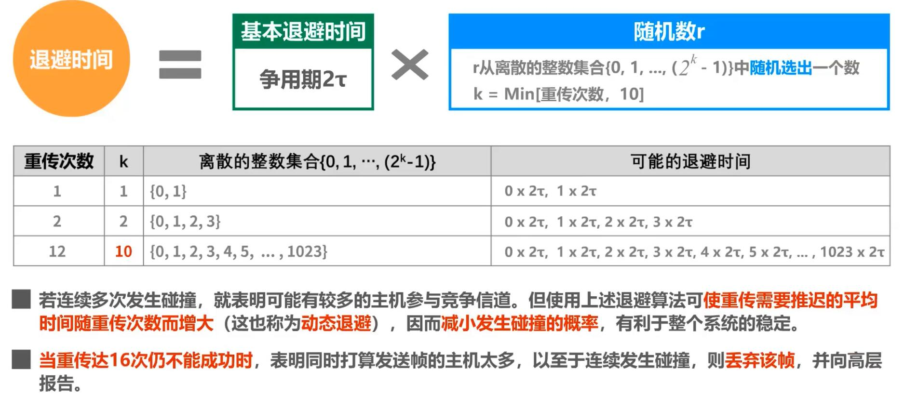
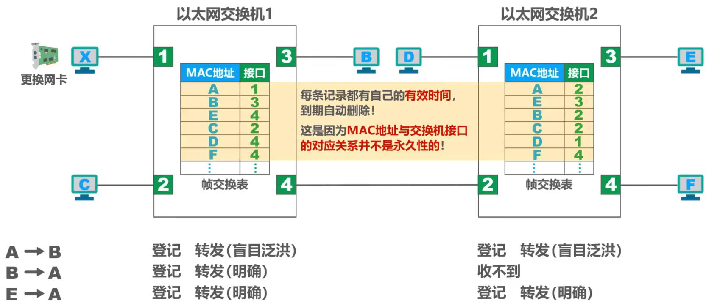

计算机网络-链路层
使用点对点信道的数据链路层： - 封装成帧、差错检测、可靠传输 使用广播信道的数据链路层： - 共享式以太网的媒体接入控制协议CSMA/CD； - 802.11局域网的媒体接入控制协议CSMA/CA； 数据链路层的互连设备 - 网桥和交换机的工作原理 - 集线器（物理层互连设备）与交换机的区别； ## 一、封装成帧 数据链路层给上层交付的协议数据单元添加帧头和帧尾使之成为帧。 - 帧头和帧尾包含有重要的控制信息； - 帧头和帧尾的作用之一就是帧定界； 透明传输：数据链路层对上层交付的传输数据没有任何限制。 - 面向字节的物理链路使用字节填充（或称字符填充）的方法实现透明传输（在与帧尾相同的数据段前插入转义字符）； - 面向比特的物理链路使用比特填充的方法实现透明传输（插入比特）； 最大传送单元MTU - 为了提高帧的传输效率，应该使帧的数据部分尽可能大一些； - 考虑到差错控制等多种因素，每一种数据链路层协议都规定了帧的数据部分的长度上限； ## 二、差错检测 比特差错：比特在传输过程中可能会产生差错，1可能会变成0，0也可能会变成1。 - 误码率BER：在一段时间内，传输错误的比特占总数的比例； - 可以使用差错检测码来检测数据传输过程中是否产生比特差错； #### 1. 奇偶校验 在待发送的数据后面添加一位奇偶校验位，表示数据中“1”个数的奇偶； - 偶数个位发生误码时无法检测出，效果不好； #### 2. 循环冗余校验CEC 收发双方约定好一个生成多项式G(x)，发送方基于待发送的数据和生成多项式计算出冗余码，将其添加到数据后面一起传输；接收方通过生成多项式来计算接受到的数据是否产生了误码。 收发双方具体处理如下： CRC有很好的检错能力，虽然计算复杂但非常易于用硬件实现，因此被广泛用于数据链路层。
检错码只能检测出错误，但不能定位并纠正错误。使用纠错码可以进行前向纠错，但开销较大，计算机网络中较少使用。 ## 三、可靠传输 数据链路层向上层提供的服务类型： - 不可靠传输：仅仅丢弃有误码的帧； - 可靠传输：想办法发送端发送什么，接收端就收到什么（无线链路误码率较高，需要可靠传输服务）； - 可靠传输服务不仅局限于数据链路层，其他各层均可选择实现；
接下来介绍三种可靠传输实现机制： #### 1. 停止-等待协议SW 原理： - 接收方接收到数据分组后，若检测无误发送则给发送方发送ACK分组，发送方收到后发送下一个数据分组；若发送方没有及时收到ACK分组则会超时重传； - 接收端检测到数据分组有误码时，将其丢弃并等待超时重传。但对于误码率较高的点对点链路，可以给发送方发送NKA分组； - 超时重传后，接收方可能会收到重复的数据分组，为了让接收方能够判断接收到的数据分组是否重复，需要给数据分组编号（1个比特）。 - 为了让发送方能够判断所受到的ACK分组是否是重复的，需要给ACK分组编号。数据链路层一般不会出现ACK分组迟到，所以该层可以不用给ACK分组编号。 - 数据链路层重传时间可以选为略大于平均往返时间； 信道利用率： #### 2. 回退N帧协议GBN 原理： - 使用n个比特给分组编序号，即序号0至2^n-1; - 发送窗口尺寸Wt取值：1<Wt<2^n-1，数据落在发送窗口外的分组不允许发送；接收串口的尺寸Wr = 1，数据落在接收窗口外的分组不允许接收，接收方只能按序接收正确到达的数据分组； - 累积确认：接收方不一定要对所有数据分组逐个发送确认，可通过发送ACKn表示需要n及以前的所有数据分组都已正确接收； - 当数据分组出现了差错，接收方会丢弃分组并发送当前接收成功的累积确认（比如序号5出现差错则会丢弃567并重复发送ACK4），发送方接收到重复的确认，就可以不等超时计时器超时就立刻重传567； #### 3. 选择重传协议SR 回退N帧协议GBN需丢弃误码数据分组及之后的所有分组，为了进一步提高性能，可设法只重传出现误码的数据分组。接收窗口尺寸Wr大于1，可以使接收方先收下失序到达但无误码的数据分组，等所缺分组收齐后再一并交送上层。 - 1<Wt<=2(n-1)，1<Wr<=Wt，若Wt>2(n-1)会出现接收方无法分辨新旧数据分组的问题； - 无法使用累计确认； ## 四、点对点协议PPP 点对点协议PPP是目前使用最广泛的点对点数据链路层协议。 PPP协议为在点对点链路传输各种协议数据报提供了一个标准方法，主要由以下三部分构成： - 对各种协议数据报的封装方法（封装成帧） - 链路控制协议LCP，用于建立、配置以及测试数据链路的链接； - 一套网络控制协议NCPs，其中的每一个协议支持不同的网络层协议； 帧格式 实现透明传输的方法 - 面向字节的异步链路：字节填充法（插入转义字符）； - 面向比特的同步链路：比特填充法（插入比特0）； 差错检测 - CRC-CCITT = X16+X12+X^5+1; - 使用PPP的链路层向上不提供可靠服务； ## 五、媒体接入控制 共享信道要注重考虑如何协调多个发送和接受站点对一个共享传输媒体的占有，即媒体接入控制MAC； - 静态划分信道：频分多址、时分多址、码分多址（不灵活，多用于物理层）； - 动态接入控制：受控接入(集中控制&分散控制，已淘汰)、随机接入； - 在有线领域，共享式局域网已被取代；但由于无线信道的广播天性，无线局域网仍然使用共享媒体技术； #### 1. 静态划分信道 信道复用：通过一条物理线路同时传输多路用户的信号。 频分复用FDM：所有用户同时占用不同的频带资源并行通信； 时分复用TDM：所有用户在不同的时间占用相同的频带宽度； 波分复用WDM：光的频分复用； 码分复用CDM - CDMA中，每一个比特时间再划分成m个短的间隔，成为码片； - 每个站被指派一个唯一的m bit码片序列，如果要发送1，则发送自己的m bit码片序列；如果要发送0，则发送m bit码片序列的二进制反码； - 码片序列挑选原则：①每个站码片必须各不相同；②每个站码片必须相互正交； #### 2. 随机接入CSMA/CD CSMA/CD：载波监听多址接入/碰撞检测，总线局域网使用。 - 多址接入MA：多个站连接在一条总线上，竞争使用总线； - 载波监听CS：每个站在发送帧之前先要检测一下总线上是否有其他站点在发送帧（“先听后说”）——在总线空闲96比特时间时发送； - 碰撞检测CD：每一个正在发送帧的站边发送边检测碰撞，一旦发现总线上出现碰撞，则立即停止发送，退避一段随机时间后再次发送； 争用期 最小帧长 - 当帧长太小时，争用期过短，已发送的帧可能在发送完毕后遭遇碰撞，而无法被检测出； - 因此以太网规定最小帧长为64字节，即512bit，如果发送的数据非常少则需要填充至64字节（包含帧头帧尾）； 最大帧长：最大长度1500字节（不包含帧头帧尾）； 退避时间计算方法：截断二进制指数退避算法  信道利用率：Smax = 1/(1+a)，a=τ/T0 - 要使帧长度尽量大，参数a尽量小，以提高信道利用率； 帧发送流程： 帧接收流程 #### 3. 随机接入CSMA/CA 载波监听多址接入/碰撞避免 CSMA/CA，802.11无线局域网使用。 - 无线网卡上实现碰撞检测对硬件要求非常高，且由于隐蔽站问题，碰撞检测意义不大； - 由于不可能避免所有碰撞，且无线信道误码率高，802.11标准使用了数据链路层确认机制（停止-等待协议）； - 802.11的MAC层标准定义了两种不同的媒体接入控制方式：分布式协调功能DCF（默认）和点协调功能PCF（较少使用）； 帧间间隔IFS：802.11标准规定，所有的站点必须在持续检测到信道空闲一段指定时间后才能发送帧。 - 高优先级帧需要等待的时间较短，低优先级帧需要等待的时间较长； - 短帧间间隔SIFS（28μs），是最短的帧间间隔，用来分隔一次对话的各帧； - DCF帧间间隔DIFS（128μs），在DCF方式中用来发送数据帧和管理帧； 工作原理： - 源站在检测到信道空闲后，经过DIFS间隔发送第一帧，目的站在接收到帧后，经过SIFS间隔反馈ACK； - 从源站发出第一帧到接收到ACK这段时间里，信道为忙；其他站在检测到信道空闲后，经过DIFS间隔并退避一段随机时间（以防止多个站点同时发送数据而产生碰撞）后，发送下一帧。 - 站点检测到信道为空，且所发送的数据帧不是成功发送完上一个数据帧之后立即连续发出的数据帧时，不用退避； 退避算法 - 站点为退避计时器设置一个随机退避时间，当退避计时器时间为0时，开始发送数据； - 当退避计时器还未减小到0信道又转为忙状态，则冻结计时器数值，等信道空闲，再经过DIFS后，继续启动计时器； - 在进行第i次退避时，在时隙编号{0,1,...,2^(i+2)-1}中随机选择一个（i达到6 时不再增加），乘以基本退避时间（一个时隙的长度）得到退避时间； 信道预约：为了尽可能减少碰撞的概率和降低碰撞影响，802.11标准允许对信道进行预约。 - 源站在发送数据帧前先发送一个短的控制帧，即请求发送RTS； - 目的站收到RTS，且媒体空闲，就发送一个响应控制帧，即允许发生CTS； - 源站收到CTS后，等待SIFS间隔即可发送数据帧； - 目的站正确收到数据帧并等待SIFS后，向源站发出ACK； - 其他各站收到CTS后就推迟接入无线局域网； - 如RTS帧发生碰撞，需执行算法重传RTS帧； - 一般数据帧发送时延往往大于传播时延，碰撞概率大；而RTS、CTS很短，碰撞的概率和开销很小； 虚拟载波监听：除RTS和CTS会携带通信需要持续时间，数据帧也能携带通信需要持续时间。 - 因此，站点只要监听到RTS帧、CTS帧或数据帧的任何一个，就能知道信道被占用的持续时间； - 虚拟载波监听机制能减少隐蔽站带来的碰撞问题； ## 六、MAC地址、IP地址和ARP协议 #### 1. MAC地址 当多个主机连接在同一个广播信道上，要想实现两个主机之间的通信，则每个主机都必须有一个数据链路层地址。 每个主机发送的帧必须携带标识发送主机和接收主机的地址，由于这类地址用于媒体介入控制（MAC），因此被称为MAC地址。 - MAC地址一般被固化在网卡（网络适配器）上，因此也被称为硬件地址和物理地址； - 一般情况下用户主机会有有线局域网适配器和无线局域网适配器，每个适配器都会有唯一的MAC地址，交换机和路由器拥有更多网络接口，所以一台设备会有多个MAC地址； IEEE 802局域网的MAC地址格式：xx-xx-xx-xx-xx-xx，每个x表示一个16进制数。 - OUI：前三个字节，分配给厂商； - 第一个字节的b0位表示单播0/多播1，b1位表示全球管理0/本地管理1； - 广播地址：FF-FF-FF-FF-FF-FF； - 单播：帧会发给广播域所有主机，只有MAC地址匹配才会接收，否则会丢弃； #### 2. IP地址 IP地址是因特网上的主机和路由器所使用的地址，用于标识两部分信息： - 网络编号：表示因特网上数以百万计的网络； - 主机编号：标识同一个网络上的不同主机或路由器接口； MAC地址不具备区分不同网络的功能，而IP地址具备。 数据包转发过程中IP地址和MAC地址的变化情况： - IP地址因填写源主机和目标主机； MAC地址因填写上一个发送接口的MAC地址和下一跳的地址； #### 3. ARP协议 地址解析协议ARP：通过IP地址找到MAC地址（不能跨网络使用）。 主机中存放ARP高速缓存表，记录各主机IP地址和MAC地址的对应关系。 - 若查找不到，则向广播地址发布ARP请求报文； - IP地址匹配的主机反馈ARP响应报文（单播）； - 将收到的响应报文记录到ARP高速缓存表中（动态，2分钟后会自动删除），下次可直接使用； ## 七、交换机 #### 1. 集线器HUB - 早期以太网的互连设备； - 工作在OSI体系结构的物理层； - 对接受到的信号进行放大、转发； - 使用集线器作为互联设备的以太网属于共享总线式以太网，集线器互连起来的所有主机共享总线宽带，属于同一个碰撞域和广播域； #### 2. 交换机SWITCH - 目前以太网中使用最广泛的互连设备； - 工作在OSI体系结构的数据链路层（也包括物理层）； - 根据MAC地址对帧进行转发（存储帧交换表，即接口号和MAC地址的对应表），因此单播帧只会发给目标主机； - 使用交换机作为互连设备的以太网是交换式以太网，交换机可以隔离碰撞域但不隔离广播域； #### 3. 交换机自学习和转发帧的流程 交换机根据帧交换表中查找到的MAC地址对帧进行转发，以太网交换机通过自学习算法逐渐建立帧交换表。  - 若帧交换表中没有源主机，则记录源主机MAC地址及对应接口； - 若帧交换表中没有目标主机，则向所有接口转发该帧（盲目泛洪），只有MAC地址对应的主机会接受该帧； - 若帧交换表有目标主机，则会直接将帧转发到对应接口； #### 4. 生成树协议STP 为了提高以太网可靠性，可以添加冗余链路。但冗余电路会形成网络环路，导致： - 广播风暴（广播帧在各交换机间反复转发）； - 主机收到重复广播帧； - 交换机的帧交换表震荡； 以太网交换机使用生成树协议STP，可以避免网络环路带来的各种问题： - 无论交换机之间采用怎样的连接，都使用生成树算法构建一个逻辑上没有环路的网络； - 交换机或网络物理拓扑发生变化时，进行生成树的重新计算； ## 八、虚拟局域网VLAN 随着交换式以太网规模扩大，广播域也会响应扩大，带来许多弊端： - 广播风暴（如一个ARP请求会传遍整个广播域）； - 难以管理和维护； - 潜在的安全问题； 使用路由器可以隔离广播域，但路由器成本较高，可以使用虚拟局域网VLAN达到类似的效果。 虚拟局域网是一种将局域网内的设备划分成与物理位置无关的逻辑组的技术，这些逻辑组具有某些共同的需求。 #### 实现方式 IEEE 802.1Q帧对以太网帧格式进行了扩展，插入4字节的VLAN标记。 - VLAN标记的最后12比特称为VLAN标识符VID，唯一地标志了以太网帧属于哪一个VLAN； - VID有效取值为1-4094； - 交换机收到普通的以太网帧时，会插入4字节的VLAN标记（打标签），转发802.1Q帧时，可能会删除VLAN标记（去标签）； 交换机端口类型： Access： - 一般用于连接用户计算机，只能属于一个VLAN； - 接收处理：一般只接收普通以太网MAC帧，根据端口PVID给帧打标签； - 发送处理：若帧中的VID与端口的PVID相等则“去标签转发”； Trunk： - 一般用于交换机之间或交换机与路由器之间，可以属于多个VLAN； - 接收处理：接收未打标签的帧，根据端口PVID打标签； - 发送处理：对VID等于PVID的帧去标签再转发，对于不等的帧直接转发； Hybird： - 既可连接用户计算机，也可以交换机之间或交换机和路由器互连，可以属于多个VLAN； - 发送处理方法：查看帧的VID是否在端口的“去标签”列表中，若存在则去标签再转发，否则直接转发（直接转发给用户计算机会因无法识别而被丢弃）； - 接收处理方法：同Trunk；